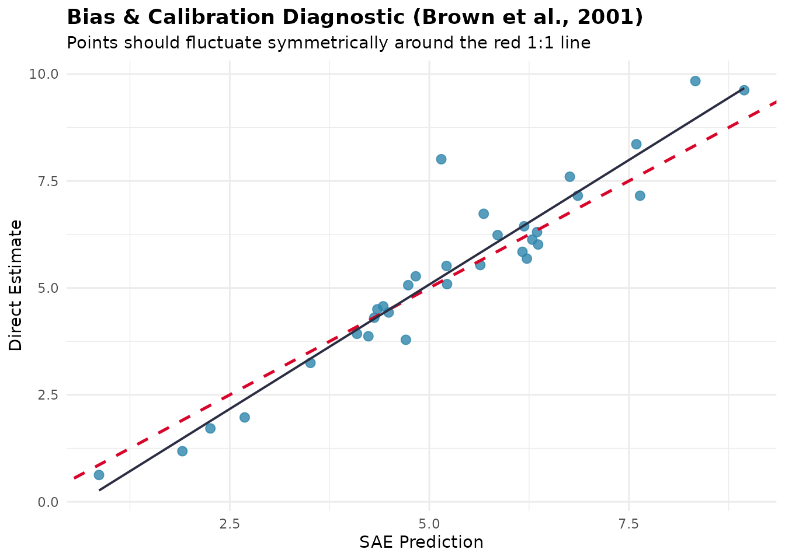

An Optimal Workflow for Small Area Estimation
Source:vignettes/articles/optimal-workflow.Rmd
optimal-workflow.RmdThis article puts the functions of fastsae in the
order in which an analysis usually goes, from the direct estimates of a
survey to the tables that are published. The order is a sensible
default, not a theorem: each step says what it checks and what to do
with the answer. The example is the mys data (mean years of
schooling of people with disabilities in 42 regencies, 10 of them
without a sample), so every output below comes from a real call.
| Step | Question | Functions |
|---|---|---|
| 1 | How good are the direct estimates? |
add_reliability_flags(),
gvf_smooth()
|
| 2 | Is there spatial structure to model? |
create_weights(),
spatial_test()
|
| 3 | Which covariates? | step_sae() |
| 4 | Which model? |
eblup_fh(), eblup_sfh(),
compare_sae()
|
| 5 | Is the model adequate? |
diagnose(), autoplot()
|
| 6 | Do the estimates add up to a published total? | benchmark_sae() |
| 7 | How are the results reported? |
map_sae(), export_sae()
|
1. Check the direct estimates
Small area models are worth fitting where the direct estimates are imprecise. Fit a first model and flag each domain by the BPS reliability tiers (RSE up to 25%, 25-50%, above 50%):
fit_full <- eblup_fh(y ~ x1 + x2 + x3, vardir = ~vardir, data = mys, print_result = FALSE)
flags <- add_reliability_flags(fit_full)
table(flags$reliability)
#>
#> Reliable (RSE ≤ 25%) Use with caution (25% < RSE ≤ 50%)
#> 22 19
#> Unreliable (RSE > 50%)
#> 1The same tiers can be computed on the direct estimates alone, and
this is what tells you how much there is to gain. When
vardir itself is noisy (small samples, so that the
estimated variances are themselves estimates), smooth it first with
gvf_smooth(): a Fay-Herriot model treats
vardir as known, so noise in it goes straight into the
shrinkage. We use the vardir of mys as given
here; see ?gvf_smooth for the methods.
2. Is there spatial structure?
spatial_test() runs the tests before any spatial model
is fitted: Moran’s I on the direct estimates and on the regression
residuals, the Anselin LM tests, and a likelihood ratio test of the
Spatial Fay-Herriot model against the standard one.
create_weights() builds W from polygons or
coordinates; mys_proxmat is ready-made here.
spatial_test(y ~ x1 + x2 + x3, vardir = ~vardir, data = mys, W = mys_proxmat)
#>
#> ── Pre-Modeling Spatial Diagnostic Tests (fastsae) ─────────────────────────────
#>
#> ── 1. Direct Response Variable (ESDA) ──
#>
#> • Global Moran's I: -0.2773 (Expected: -0.0323, z-stat: -2.049)
#> • p-value: "0.9798" [ns]
#> ℹ Direct estimates show no significant spatial clustering.
#>
#> ── 2. Regression Residuals (Controlling for Auxiliary Variables) ──
#>
#> • Residual Moran's I: -0.246 (z-stat: -1.778, p-value: "0.9623") [ns]
#> • Anselin LM-Error Test: 3.616 (df = 1, p-value: "0.05724") [ns]
#> • Anselin LM-Lag Test: 1.974 (df = 1, p-value: "0.16")
#>
#> ── 3. Model Comparison (Standard FH vs Spatial FH) ──
#>
#> • Standard FH: sigma2_u = 2.1629, ML LogLik = -65.01, AIC = 140.02
#> • Spatial FH (SAR): sigma2_u = 0.8141, rho = -1, ML LogLik = -63.06, AIC =
#> 138.12
#> • Likelihood Ratio: Chisq = 3.901 (df = 1, p-value = "0.04825") [*]
#> • Information Delta: Delta AIC = -1.9, Delta BIC = -0.44
#>
#> ── 4. Final Recommendation ──
#>
#> Decision test: likelihood ratio test (FH vs Spatial FH) at alpha = 0.05.
#> ✔ SPATIAL MODEL RECOMMENDED: Significant spatial spillover detected.
#> ✔ The likelihood ratio test of rho = 0 rejects the standard Fay-Herriot model
#> in favour of the Spatial Fay-Herriot model.
#> ℹ Recommended functions: `eblup_sfh()` (Frequentist) or `hb_area(..., spatial =
#> 'bym2')` (Bayesian).Read the tests together, not one at a time. Here the likelihood ratio test is just significant, but the Moran’s I of the residuals is negative and not significant, and the spatial model puts the autocorrelation at the boundary:
fit_sfh_full <- eblup_sfh(y ~ x1 + x2 + x3, vardir = ~vardir, data = mys,
W = mys_proxmat, print_result = FALSE)
fit_sfh_full$rho
#> [1] -1A SAR parameter of
is on the edge of its parameter space (see the NEWS file for how
eblup_sfh() treats it), and it means negative, not
positive, spatial dependence, which is not the “neighbours resemble each
other” pattern that motivates a spatial model. On these data the
evidence for a spatial effect is weak, and the decision below is to keep
the standard model. On data with clear positive clustering the tests
agree, and the spatial model is the choice.
3. Select the covariates
step_sae() searches the covariates by an information
criterion (BIC by default) and refits the model with the same settings
at every step. For the EBLUP models it compares fits by ML, because the
REML likelihood cannot compare models with different covariates; the
selected model is then refitted with the method of the original.
sel <- step_sae(fit_full, trace = FALSE)
sel$path
#> Step BIC
#> 1 147.3513
#> 2 - x1 143.9140
#> 3 - x3 141.0402
formula(sel$model)
#> y ~ x2
#> <environment: 0x5643079a7c30>Select with the model you intend to use. With a spatial model, a
spatially smooth covariate and the spatial random effect explain the
same variation, so the covariates kept by a non-spatial search can be
redundant once the spatial effect is in (see ?step_sae).
Selection also optimises the criterion on the same data it is then
fitted to, so the standard errors of the selected model do not account
for the search; treat the selected model as a good description, not as a
tested hypothesis.
4. Fit and compare the candidates
Fit the selected specification as a standard and as a spatial model and compare them on the same domains:
fit_fh <- eblup_fh(y ~ x2, vardir = ~vardir, data = mys, print_result = FALSE)
fit_sfh <- eblup_sfh(y ~ x2, vardir = ~vardir, data = mys, W = mys_proxmat,
print_result = FALSE)
compare_sae(fit_fh, fit_sfh, names = c("FH", "SFH"))
#>
#> ── Small Area Estimation Model Concordance & Comparison ────────────────────────
#> Model 1: FH
#> Model 2: SFH
#> Matched Domains: 42
#> ────────────────────────────────────────────────────────────────────────────────
#>
#> Agreement, Ranking & Efficiency Metrics:
#> Group Metric Value
#> Domains Matched Domains 42
#> Agreement Mean Difference (SFH - FH) -0.0095
#> Agreement 95% Limits of Agreement [-0.7415, 0.7225]
#> Agreement Mean Absolute Difference (MAE) 0.2857
#> Agreement Root Mean Squared Difference (RMSD) 0.3691
#> Agreement Lin's Concordance Correlation (CCC) 0.9750
#> Uncertainty Median |Difference| / RMSE of FH 0.213
#> Uncertainty % of domains with |Difference| > RMSE of FH 0.0%
#> Ranking Spearman Rank Correlation (rho) 0.9610
#> Ranking Mean Absolute Rank Change 2.50
#> Ranking Shared Top 4 (highest estimates) 4 / 4
#> Ranking Shared Bottom 4 (lowest estimates) 4 / 4
#> Efficiency Mean MSE Ratio (FH / SFH) 1.3998
#> Efficiency Median MSE Ratio (FH / SFH) 1.2767
#> Efficiency % of domains where SFH is more efficient 100.0%
#> Efficiency Mean RSE % (FH) 25.13%
#> Efficiency Mean RSE % (SFH) 21.12%compare_sae() reports agreement (Bland-Altman limits,
Lin’s concordance correlation), ranking, and efficiency. A model that is
more efficient on paper is only better if it is also right: the MSE
ratio is computed under each model’s own assumptions, so a smaller MSE
does not by itself justify a model whose spatial parameter sits on the
boundary. Here the two sets of estimates are very close, and the simpler
model is kept.
When the response is a proportion, a count or a skewed positive
quantity, or you want the uncertainty as a posterior, use
hb_area() instead (see the Bayesian article); with unit-level data,
eblup_bhf() or hb_unit() (see the unit-level article).
step_sae() and compare_sae() work with those
too. If the MSE matters more than the point estimates,
eblup_sfh() and eblup_stfh() also have a
parametric bootstrap MSE (mse_type = "pbmse"), run in
parallel.
5. Check the model
diag_fh <- diagnose(fit_fh, W = mys_proxmat[!is.na(mys$y), !is.na(mys$y)])
diag_fh$precision[c("mean_direct_rse", "mean_sae_rse", "prop_reliable")]
#> $mean_direct_rse
#> [1] 29.49003
#>
#> $mean_sae_rse
#> [1] 25.13293
#>
#> $prop_reliable
#> [1] 52.38095
diag_fh$goodness_of_fit[c("w_stat", "df", "p_value")]
#> NULLdiagnose() reports the gain in precision against the
direct estimates, the goodness of fit of Brown et al. (2001), the
descriptive calibration regression, and the residual spatial
autocorrelation; see the diagnostics
article for how to read each. The plots are one call away:
autoplot(diag_fh, type = "calibration")
Two things to look for: a calibration slope far from 1 together with a visible pattern in the residuals, which means a missing covariate or a wrong link; and residuals that are spatially clustered, which is the cue to go back to step 2.
6. Benchmark to a published total
Official statistics often have to add up: the area estimates must
reproduce a published estimate for the whole population.
benchmark_sae() adjusts a fitted model after the fact. The
target must come from outside the model, such as the national direct
estimate of the same survey. Here the sample-weighted mean of the direct
estimates stands in for it:
national <- weighted.mean(mys$y, mys$weight, na.rm = TRUE)
bm <- benchmark_sae(fit_fh, target = national, weight = mys$weight, method = "ratio")
c(target = national,
before = weighted.mean(bm$original, mys$weight),
after = weighted.mean(bm$benchmarked, mys$weight))
#> target before after
#> 5.848214 5.703441 5.848214The weights should be the population shares of the domains.
mys$weight is a sample share, used here only so
that the example runs. With sample shares, the benchmark reproduces a
figure that is not the population mean. The ratio, difference, optimal
and logit methods differ in how they spread the adjustment and in what
happens to the MSE (see ?benchmark_sae); benchmarking also
adds to the MSE of the adjusted estimates (the
mse_benchmarked column of the result). If you want the
constraint built into the fit, use self_benchmark = TRUE in
the model function instead.
7. Report
map_sae() draws choropleth maps of the estimate, its RSE
or its reliability tier from an sf object, and
export_sae() writes the estimates, the reliability flags
and the benchmarked values to a spreadsheet:
out <- tempfile(fileext = ".xlsx")
invisible(export_sae(fit_fh, file = out, benchmark = bm))
#> ✔ Successfully exported SAE results to Excel: /tmp/RtmpIqR3TV/file40263bb2d8d1.xlsx
file.exists(out)
#> [1] TRUE
# needs polygons: an sf object with one row per domain and a key to match `domain`
map_sae(fit_fh, sf_geom = polygons, key = "area_id", type = "estimate")
map_sae(fit_fh, sf_geom = polygons, key = "area_id", type = "reliability")Report the RSE or the reliability tier next to every estimate, and
say which areas have no direct estimate
(mys$area[is.na(mys$y)]): their value comes from the model
alone.
Summary of the decisions
- Start from the reliability of the direct estimates; fit a model where it pays.
- Test for spatial structure, and require the tests and the estimated parameter to agree before adding a spatial effect.
- Select covariates with the model you will use.
- Compare candidates on agreement and on the adequacy checks, not on the MSE alone.
- Check calibration, residuals and residual spatial autocorrelation before publishing.
- Benchmark only to a target from outside the model, with population weights.
- Publish the uncertainty and the reliability tier with every estimate.
References
- Brown, G., Chambers, R., Heady, P., & Heasman, D. (2001). Evaluation of small area estimation methods: An application to unemployment estimates from the UK LFS. Proceedings of Statistics Canada Symposium 2001: Achieving Data Quality in a Statistical Agency.
- Rao, J. N. K., & Molina, I. (2015). Small Area Estimation (2nd ed.). John Wiley & Sons.